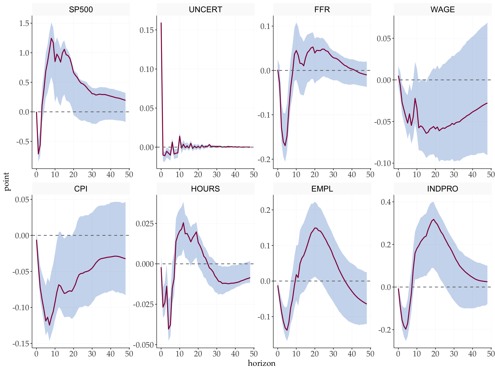
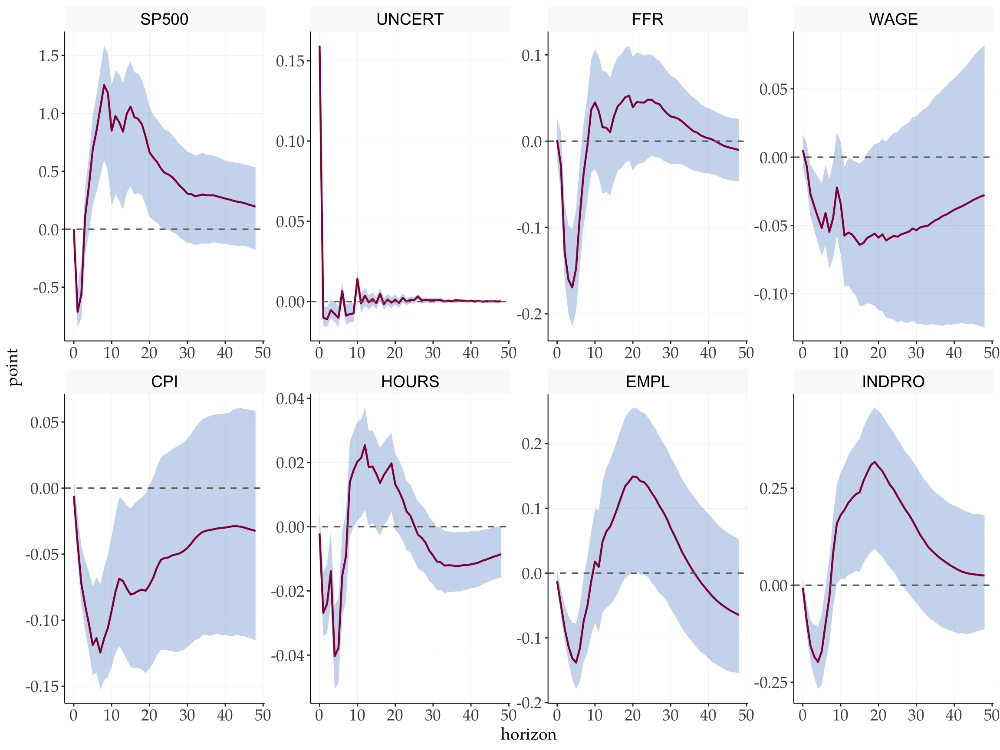
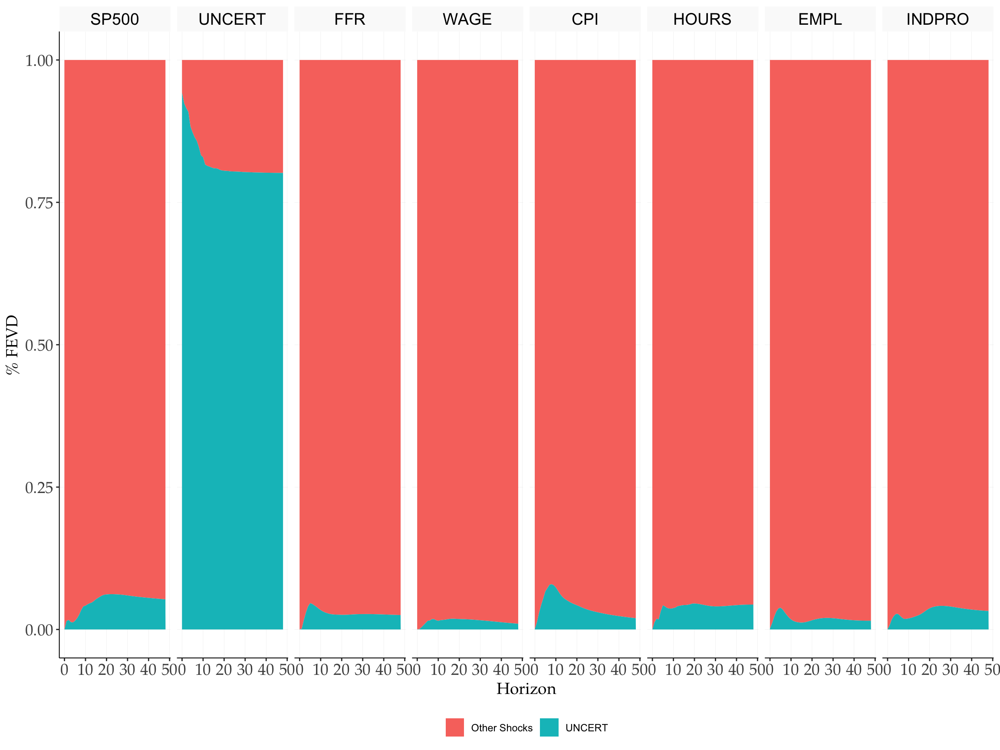
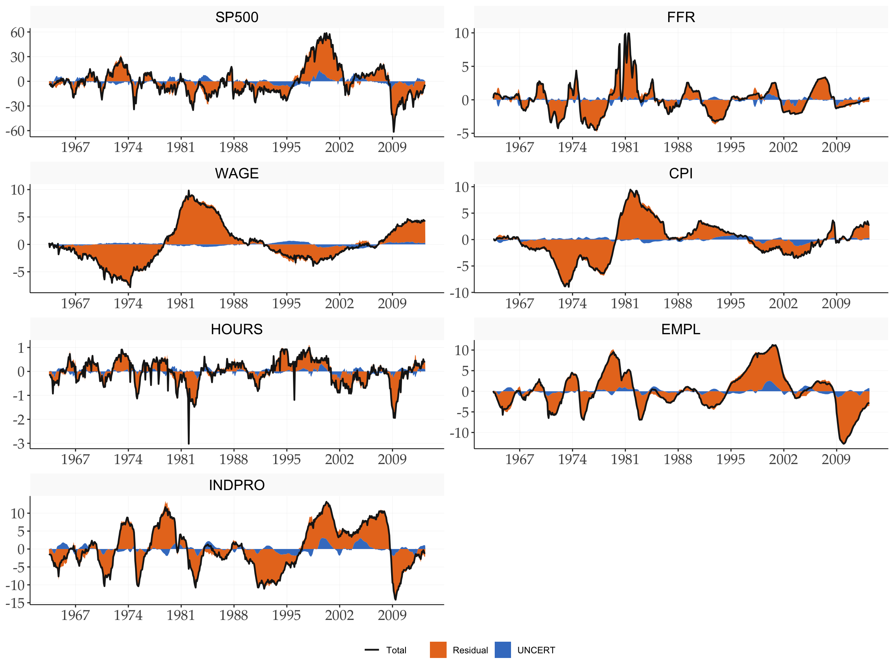

Replication: Bloom (2009)
The Impact of Uncertainty Shocks
2026-03-25
Source:vignettes/Replications/Bloom2009.qmd
1 Overview
This document replicates the main empirical results of (bloom2009?), which identifies uncertainty shocks using a Cholesky decomposition. The uncertainty indicator — constructed from 17 identified high-volatility events — is ordered first so that it has a contemporaneous effect on all other variables but is itself unaffected by them within the month.
Reference: Bloom, N. (2009). The impact of uncertainty shocks. Econometrica, 77(3), 623–685.
2 Setup
3 Data
4 VAR Estimation
p <- 12 # lag length used in the original paper
c <- 1
var_bloom <- fVAR(y, p, c)
sigma <- var_bloom$sigma_full
# Cholesky factor (lower triangular)
S <- t(chol(sigma))
# Wold IRFs
horizon <- 48
wold <- fwoldIRF(var_bloom, horizon = horizon)
point_irf <- fcholeskyIRF(wold, S)5 Bootstrap Confidence Bands
5.1 Standard Bootstrap
tic()
bloom_chol <- fbootstrapChol(
y = y,
var_result = var_bloom,
nboot = 1000,
horizon = horizon,
prc = 68,
bootscheme = "residual"
)
toc()
#> 16.609 sec elapsed5.2 Bias-Corrected Bootstrap
tic()
bloom_corrected <- fbootstrapCholCorrected(
y = y,
var_result = var_bloom,
nboot1 = 1000,
nboot2 = 2000,
horizon = horizon,
prc = 68,
bootscheme = "residual"
)
toc()
#> 39.265 sec elapsed6 Impulse Response Functions
6.1 Standard Bootstrap
fplotirf_chol(
point_irf,
bloom_chol$upper,
bloom_chol$lower,
shock = shock,
varnames = var_names,
prc = 68,
facet_ncol = 4
)
6.2 Bias-Corrected Bootstrap
fplotirf_chol(
point_irf,
bloom_corrected$upper,
bloom_corrected$lower,
shock = shock,
varnames = var_names,
prc = 68,
facet_ncol = 4
)
7 Forecast Error Variance Decomposition
vardec <- fevd_chol(point_irf, shock = shock)
fplot_vardec(
fevd = vardec$fevd,
varnames = var_names,
shocknames = shockname
)
8 Historical Decomposition
# Exclude the shock variable itself from the response variables
series <- setdiff(seq_len(N), shock)
histdec_list <- setNames(
lapply(series, function(i) fhistdec(y, var_bloom, S, i)$histdec),
colnames(y)[series]
)
fplot_histdec(
histdec_list = histdec_list,
shock = shock,
shockname = shockname,
dates = dates_vec,
p = p,
facet_ncol = 2
) +
scale_x_date(date_breaks = "7 years", date_labels = "%Y")